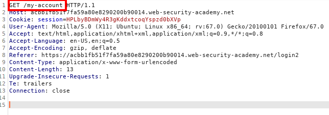

Bypassing two-factor authentication
This is the same LAB & vulnerability seen in the Busisness Logic Flaws → User's won't always follow the intended sequence
----------------
Sometimes the implementation of two-factor authentication is flawed to the point where it can be bypassed entirely.
If the user is first prompted to enter a password, and then prompted to enter a verification code on a separate page, the user is effectively in a "logged in" state before they have entered the verification code. In this case, it is worth testing to see if you can directly skip to "logged-in only" pages after completing the first authentication step. Occasionally, you will find that a website doesn't actually check whether or not you completed the second step before loading the page
After 2FA request go directly to the webpage account of the victim
In this LAB once we have done the request to login with valid credentials, we try to bypass the workflow of the 2FA code and go directly to the account page of the victim.
Discover WebApp 2FA Workflow
Access with our account to check which pages are visited during the 2FA authentication workflow
1. POST request to login with our credentials (username & password)

2. GET request to get 2FA code on our email
3. POST request with our 2FA code received in the email
4. GET request for the /my-account page
Exploit
In the workflow above there is not anything that tie step 3 and 4.
What if when we have inserted stolen credentials of our victim we can bypass 2FA code by going directly to step 4?
1.
2.
3. Here, because we have not access to the email of the victim with the 2FA code,
We try to change the URL to navigate to /my-account.

edited request below

Yes we have got access to the account of the victim!
Bibliography:
https://portswigger.net/web-security/authentication/multi-factor/lab-2fa-simple-bypass
https://portswigger.net/web-security/authentication/multi-factor